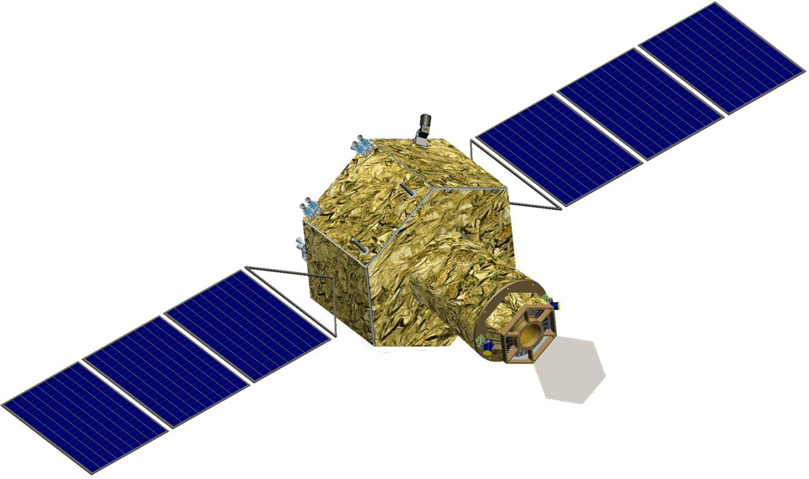

Hot Universe Baryon Surveyor 
The primary scientific objective of HUBS is to conduct a census of baryons in the warm-hot circumgalactic and intergalactic media and thus to directly address the issue of “missing baryons” in the local universe. The results are expected to impact our understanding of galaxy formation. Secondary objectives are many, including hot interstellar medium, diffuse X-ray background, supernova remnants, as well as charge exchange processes in the solar system. (Title Figure Source: http://www.illustris-project.org/media/)
Learn More